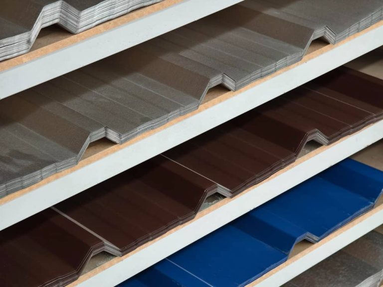

Your roof, done once and done properly.
Pitched and flat roofs, repairs, Velux windows and roofline, fitted by our own directly employed roofers. Free no obligation survey, a fixed written price, and a 15 year workmanship guarantee backed by a 10 year insurance backed guarantee.
★★★★★ 4.9 from 380+ Google reviews


Roofs, roofline and guttering
Directly employed roofers, a fixed written price before we start, and guarantees registered on your behalf when we finish.
Pitched roofs
Full strip and re roof in tile or natural slate, with new battens, membrane and leadwork. We help you pick the material for the property rather than for our margin.

Flat roofs
EPDM Firestone rubber, Cureit GRP fibreglass or high performance felt, laid to falls so water actually leaves the roof. Watertight finish, guaranteed.

Roof repairs
Leaks, slipped or missing tiles, storm damage, sagging areas and failed flashing. We will tell you honestly when a repair will do and when it will not.

Fascias, soffits and guttering
Low maintenance uPVC roofline, fitted properly. A sound roofline is what stops water ingress and rot reaching the timbers behind it.

Velux windows
Certified Velux installation for lofts, kitchens and extensions, flashed and sealed to a watertight finish that will not leak in the first storm.

Roof care plans
Routine inspections, gutter clearing, moss removal, minor repairs and a written condition report. Built for homeowners and landlords who would rather not wait for a leak.

Four steps, and no pressure at any of them
Tell us what you need
Use the online form or call us with a brief description of the work. We will arrange a time that suits you rather than a two hour window.
Free roof survey
We come out, get up on the roof properly and assess it, then give you a transparent written quote with no obligation to proceed.
The work itself
Our own roofers arrive on the day agreed, complete the job to the standard quoted, and leave the site clean.
Aftercare
We check you are satisfied, register your guarantees, and stay available. Roof care plans are there if you want ongoing cover.
Why our roofing beats the rest
A 15 year workmanship guarantee on installations, plus a separate 10 year insurance backed guarantee that still stands if we stopped trading tomorrow.
NFRC and CoRC registered, TrustMark endorsed, Trading Standards Buy With Confidence approved, and Velux certified for window fitting.
No subcontractors and nobody on commission. The team that surveys your roof is the team that works on it, so nobody has a reason to oversell you.
We get up on the roof properly before quoting, and if a repair will do we will say so rather than selling you a full re roof.
You get the figure in writing before anything starts. No surprises once the scaffold is up, which is exactly when surprises tend to appear.
Spread the cost over terms up to five years. Subject to status and credit checks; we act as an introducer, not a lender, and give no financial advice.
Roofs we have finished
 Re roof with new ridge and chimney flashing
Re roof with new ridge and chimney flashing Roofline replacement across an estate
Roofline replacement across an estate Ridge capping and dry fix system
Ridge capping and dry fix system Chimney repointing and lead flashing
Chimney repointing and lead flashing
New rafters and structural timbers Scaffold up, full strip and re roof
Scaffold up, full strip and re roof Strip out and dispose of old covering
Strip out and dispose of old covering Working at height, fully scaffolded
Working at height, fully scaffoldedRated 4.9 from 380+ reviews
"Everything was completed quickly and efficiently and nothing was too much trouble. Everyone was very respectful of my home, kept the drive clear and swept up each evening. Very satisfied."
Alexa BennettFull pitched re roof"Had three quotes and this was the only one that came with a proper written breakdown. The price at the end was the price on the quote, which after our last builder was a relief."
Dan RowntreeFlat roof, EPDM rubber"Came out the morning after the storm, made it safe the same day and did the permanent repair that week. Could not have asked for more."
Margaret HoltStorm damage repair"New fascias, soffits and gutters right round the house in two days. Tidy job, and they took all the old plastic away with them."
James PembertonRoofline replacement"Velux fitted in the loft conversion and not a drop through it over the winter. They flashed it properly rather than relying on sealant."
Priya NairVelux window installation"We took the care plan after the re roof. They come twice a year, clear the gutters and send a short report with photos. Worth it for the peace of mind."
Colin BaxterRoof care planTwo guarantees, not one
Every installation carries our 15 year workmanship guarantee. On top of that sits a 10 year insurance backed guarantee, held by a third party, which still pays out if this company ceased trading. That second one is the part most roofers do not offer, and the only one worth anything if the worst happens.
Guarantee
Frequently asked questions
It depends on the size and pitch of the roof, the material, the state of the timbers underneath and whether scaffolding is straightforward. That is why we survey before quoting rather than giving a number over the phone that changes later.
A typical semi detached pitched re roof runs three to five working days once the scaffold is up. Larger or more complex roofs take longer, and we will give you the expected duration in writing before you commit.
For almost any pitched roof work, yes. It is a legal working at height requirement, not an upsell, and it is included in the quoted price rather than added afterwards.
Your workmanship guarantee is only as good as the company behind it. An insurance backed guarantee is held by an independent insurer, so if the installer ceases trading the cover continues. Ours runs for 10 years alongside the 15 year workmanship guarantee.
Often, yes, and we will say so. Slipped tiles, failed flashing, a cracked valley or localised storm damage are usually repairs. We only recommend a full re roof when the battens, membrane or timbers have gone.
EPDM Firestone rubber, Cureit GRP fibreglass and high performance felt. EPDM suits most domestic flat roofs, GRP is better where a very hard wearing surface is needed. Both are laid to falls so water drains rather than pools.
We attend storm damage quickly and make the roof safe first. We will provide the photographs, written report and itemised quote your insurer needs, though the claim itself stays between you and them.
If they are rotten or the guttering behind them is failing, yes. A failed roofline lets water into the timbers and rafter ends, which turns a few hundred pounds of uPVC into a structural repair.
Yes, along with CoRC. We are also TrustMark registered, approved under Trading Standards Buy With Confidence, and certified by Velux for window installation.
We do, as a certified Velux installer. Loft conversions, kitchens and extensions. The flashing kit and seal are what stop a roof window leaking, so it is worth having it fitted by someone certified for it.
A yearly or twice yearly visit covering inspection, gutter clearing, moss removal, minor repairs and a written condition report. Popular with landlords and with anyone who would rather find a problem before the ceiling does.
Yes, with terms up to five years. Finance is subject to status and credit checks. We act as a credit introducer and not a lender, and we do not give financial advice.
Get a free roof survey, and an honest answer.
We will get up on the roof, tell you what it actually needs, and put a fixed price in writing. No obligation to go ahead.
Opening hours
Mon to Fri08:00 to 17:30Saturday09:00 to 13:00SundayClosedStorm damageSame day
Office
Roofing Ltd1 Broadwater Road
Worthing BN13 2EX
Areas we cover
Worthing · Brighton · Chichester
Portsmouth · Horsham · Crawley
East & West Sussex, Hampshire
Outside these? Call and we will tell you honestly.